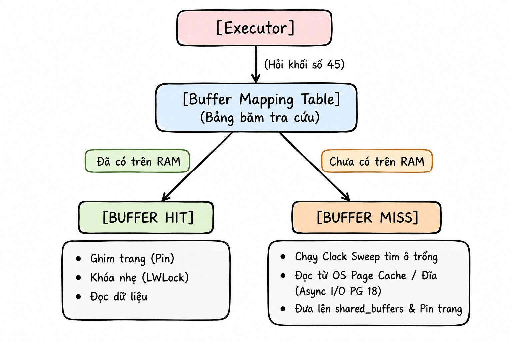
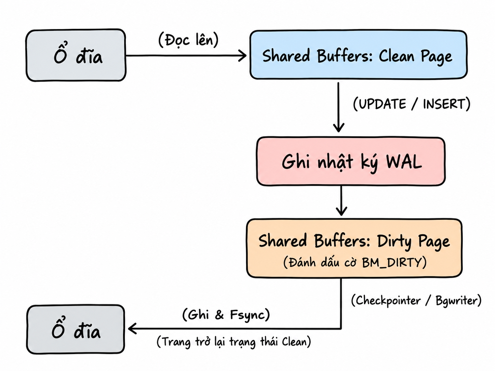
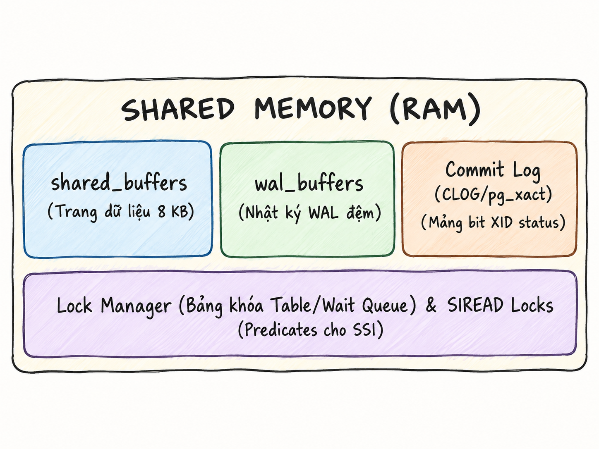
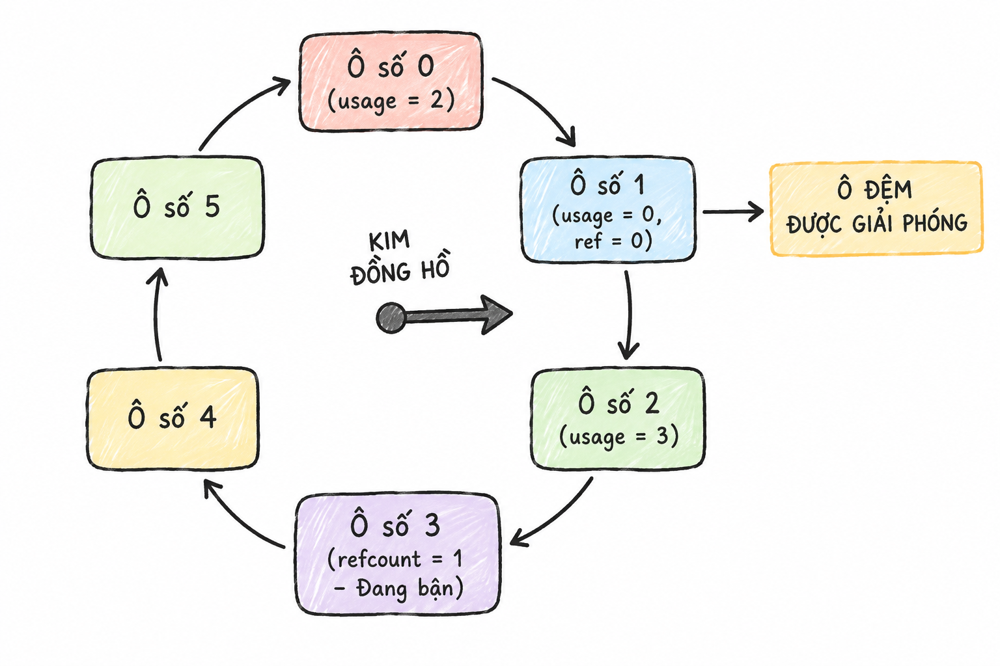

PostgreSQL
Truy vấn, lưu trữ
& phục hồi
Trong Phần 1 — Phân cấp, tiến trình và bộ nhớ, ta đã tìm hiểu cấu trúc logic và mô hình kết nối của PostgreSQL. Mỗi kết nối client được phục vụ bởi một backend process, có bộ nhớ riêng cho truy vấn và truy cập các trang dữ liệu dùng chung qua shared_buffers.
Phần 2 theo dõi một truy vấn qua SQL Engine, bộ nhớ đệm, giao dịch và lưu trữ vật lý. Đây lần lượt là tầng 2, 3 và 4 trong mô hình kiến trúc đang dùng; tầng 1 về kết nối và tiến trình đã được trình bày ở phần trước.
Trong loạt bài: Phần 1 — Phân cấp, tiến trình và bộ nhớ · Phần 2 — Truy vấn, lưu trữ và phục hồi.
Bốn tầng kiến trúc trong loạt bài:
- Tầng 1 — Tiến trình, kết nối và bộ nhớ · Phần 1.
- Tầng 2 — Xử lý truy vấn · Phần 2.
- Tầng 3 — Bộ nhớ đệm và giao dịch · Phần 2.
- Tầng 4 — Lưu trữ vật lý và phục hồi · Phần 2.
Tầng 2: Xử lý truy vấn
Tầng 2 (SQL Engine / Query Processing Layer) là bộ phận điều hành logic của PostgreSQL, chịu trách nhiệm chuyển câu lệnh SQL dạng văn bản khai báo (Declarative Text), ví dụ SELECT * FROM table, thành kế hoạch thực thi vật lý tối ưu nhất dựa trên chi phí tính toán.
Chuỗi biên dịch và thực thi của tầng 2 gồm các giai đoạn sau:

Giai đoạn 1: Parser (phân tích cú pháp thô)
Nhiệm vụ duy nhất của giai đoạn này là chuyển đổi một chuỗi ký tự văn bản thô (String) thành một cấu trúc dữ liệu dạng cây trong bộ nhớ RAM mà máy tính có thể xử lý, gọi là Parse Tree.
Lưu ý: ở giai đoạn này, Parser chỉ kiểm tra cú pháp và thứ tự câu lệnh, không kiểm tra xem bảng được truy vấn có hợp lệ hay không. Lấy ví dụ khi phân tích câu “The green dragon is flying over the moon”, Parser chỉ biết câu này đúng ngữ pháp, không biết “green dragon” có tồn tại hay không.
Lý do PostgreSQL thiết kế Parser độc lập hoàn toàn với dữ liệu thực tế là để tối ưu tốc độ và tách biệt trách nhiệm (Separation of Concerns). Nhiệm vụ xác thực sự tồn tại của bảng, kiểu dữ liệu cột và quyền truy cập của người dùng được giao toàn bộ cho giai đoạn thứ hai: Rewriter / Analyzer.
Đây là minh họa cho một Parse Tree:
SelectStmt
├── targetList (Danh sách cột muốn lấy)
│ ├── ResTarget -> ColumnRef ("name")
│ └── ResTarget -> ColumnRef ("age")
├── fromClause (Nguồn dữ liệu)
│ └── RangeVar (relname = "users")
└── whereClause (Điều kiện lọc)
└── A_Expr (toán tử ">")
├── lexpr -> ColumnRef ("age")
└── rexpr -> A_Const (giá trị nguyên = 18)
Giai đoạn 2: Rewriter / Analyzer (phân tích ngữ nghĩa và biến đổi quy tắc)
Ở giai đoạn này, hệ thống kiểm tra sự tồn tại của bảng, cột, kiểu dữ liệu và quyền truy cập của người dùng bằng cách đối chiếu Parse Tree với các bảng metadata của hệ thống: pg_class, pg_attribute, pg_constraint. Sau đó, Parse Tree được chuyển thành Query Tree.
Tiếp theo, hệ thống áp dụng các quy tắc biến đổi để điều chỉnh cấu trúc Query Tree nếu câu truy vấn truy cập vào view. RLS và các quy tắc biến đổi lệnh DML cũng được xử lý trực tiếp trong giai đoạn này.
Giai đoạn 3: Planner / Optimizer
Ở giai đoạn này, Query Tree được chuyển thành một kế hoạch thực thi vật lý (Plan Tree) có chi phí tính toán thấp nhất. PostgreSQL vận hành theo mô hình tối ưu hóa dựa trên chi phí (Cost-Based Optimizer — CBO), thay vì áp dụng các quy tắc cứng nhắc như luôn sử dụng index khi có index.
Vậy Cost ở đây là gì? Cost phản ánh lượng tài nguyên mà câu truy vấn tiêu tốn, gồm I/O đọc đĩa và CPU xử lý, chứ không phải thời gian. Với một câu truy vấn, Planner tạo ra nhiều phương án thực thi và ước lượng mức tiêu thụ tài nguyên của từng phương án. Phương án tiêu tốn ít tài nguyên nhất được chọn làm Plan Tree.
Dựa trên dữ liệu thống kê từ Analyzer, Planner trước hết ước lượng số dòng trả về của từng biểu thức. Sau đó, Planner dùng thuật toán quy hoạch động để vừa sinh các phương án, vừa tính toán chi phí và loại bỏ ngay các nhánh kém tối ưu. Cuối cùng, Planner chọn phương án có Total Cost hoặc Startup Cost phù hợp nhất, tùy vào việc có LIMIT hoặc CURSOR hay không, để đóng gói thành Plan Tree và chuyển cho Executor.
- Total Cost: Chi phí để trả về toàn bộ bảng dữ liệu.
- Startup Cost: Chi phí để bắt đầu trả về dòng dữ liệu đầu tiên.
Một Plan Tree có hình dạng như thế nào? Giả sử bạn chạy một câu lệnh đơn giản:
SELECT name FROM users WHERE age > 18 LIMIT 2;
PostgreSQL biến câu lệnh này thành một dây chuyền gồm 3 nút xếp chồng lên nhau:
[Nút 3: LIMIT (Lấy đúng 2 người)] <-- Nút trên cùng (Nút cha)
↑
[Nút 2: FILTER (Kiểm tra age > 18)] <-- Nút ở giữa
↑
[Nút 1: SEQ SCAN (Đọc từng dòng bảng users)] <-- Nút dưới cùng (Nút con)
Giai đoạn 4: Executor (thực thi kế hoạch — Execution)
Một hiểu nhầm thường gặp ở người mới học là: Nếu nút 1 đọc được 1 triệu dòng dữ liệu, nó sẽ chuyển toàn bộ lên nút 2; nút 2 lọc rồi chuyển toàn bộ kết quả cho nút 3 để chỉ lấy 2 người.
Tuy nhiên, như đã đề cập ở trên, PostgreSQL truyền dữ liệu theo từng dòng và vận hành theo cơ chế pull: nút phía trên gửi yêu cầu xuống nút phía dưới để lấy từng dòng dữ liệu. Ví dụ dễ hiểu:
Client yêu cầu nút LIMIT: “Hãy trả về kết quả.” Nút LIMIT yêu cầu nút FILTER: “Tôi cần 2 người, hãy trả về người đầu tiên trước.”
Nút FILTER chưa có dữ liệu nên yêu cầu nút SEQ SCAN: “Hãy đọc đúng 1 dòng từ ổ đĩa.” Nút SEQ SCAN đọc dòng đầu tiên từ ổ đĩa — Nam, age = 15 — rồi chuyển lên nút FILTER.
Nút FILTER kiểm tra 15 < 18, loại dòng này và tiếp tục yêu cầu nút SEQ SCAN: “Dòng này không đáp ứng điều kiện, hãy đọc dòng tiếp theo.”
Nút SEQ SCAN đọc dòng thứ hai — Lan, age = 20 — rồi chuyển cho nút FILTER. Nút FILTER kiểm tra 20 > 18, xác định dữ liệu hợp lệ và chuyển dòng của Lan lên nút LIMIT.
Nút LIMIT nhận được 1 người, còn thiếu 1 người để đủ 2, nên tiếp tục yêu cầu nút FILTER: “Hãy trả về người thứ hai.” Quá trình lặp lại cho đến khi nút LIMIT nhận đủ người thứ hai, ví dụ Hùng, age = 22.
Khi đã nhận đủ 2 người, nút LIMIT yêu cầu toàn bộ dây chuyền dừng lại. Đồng thời, Executor cũng đọc metadata trong Tuple Header để kiểm tra xem dữ liệu có được phép hiển thị hay không.
Giai đoạn 5: Tầng bộ nhớ đệm và lưu trữ vật lý (Storage Engine)
Ở giai đoạn này, khi các nút cần đọc dữ liệu, Executor không bao giờ làm việc trực tiếp với ổ đĩa mà gửi yêu cầu tới Buffer Manager. Buffer Manager tra bảng băm (Buffer Mapping Hash Table). Nếu dữ liệu đã có trên RAM, Executor trực tiếp trích xuất dữ liệu và trả về nút cha. Dữ liệu có sẵn trên RAM giúp giảm chi phí đọc từ ổ đĩa.
Khi dữ liệu không có trên RAM (Buffer Miss), Buffer Manager phải nạp trang từ ổ đĩa vào shared_buffers. Sau đó, Executor đọc dữ liệu từ đây.
Khi cần ghi dữ liệu, các thay đổi được thực hiện trên RAM và các page tương ứng được đánh dấu là Dirty Page. Ngay tại thời điểm sửa dữ liệu trên RAM, PostgreSQL sinh ra WAL record và lưu vào wal_buffers trên RAM.
Khi người dùng COMMIT, hệ thống không ghi ngay các Dirty Page xuống đĩa mà ghi nội dung wal_buffers xuống trước, theo một nguyên tắc bất biến của database: Một Dirty Page trên RAM tuyệt đối không được ghi xuống đĩa nếu bản ghi WAL mô tả thay đổi của trang đó chưa được lưu an toàn trên đĩa.
Các Dirty Page vẫn nằm trong shared_buffers trên RAM để các tiến trình nền như Checkpointer hoặc bgwriter ghi dần xuống đĩa sau đó. Chỉ khi chip nhớ của ổ đĩa phát tín hiệu xác nhận “Các byte WAL đã được lưu an toàn trên đĩa vật lý”, PostgreSQL mới gửi phản hồi COMMIT thành công về cho client.

Các khái niệm cần biết ở giai đoạn này
Để dễ hiểu hơn về giai đoạn này, ta sẽ cùng tìm hiểu những khái niệm sau:
Dirty Page: Là một page trên RAM có nội dung đã bị thay đổi. Để dễ hình dung, với Clean Page, dữ liệu trên RAM và trên ổ đĩa giống nhau 100%; với Dirty Page, dữ liệu trên RAM là phiên bản mới nhất, còn dữ liệu trên đĩa là phiên bản cũ.
Vòng đời của một Dirty Page diễn ra như sau:

Thành phần nào chịu trách nhiệm dọn dẹp Dirty Page?
- Checkpointer: Quét toàn bộ
shared_buffers, tìm tất cả Dirty Page và buộc ghi xuống ổ đĩa. Checkpointer đánh dấu một checkpoint vào file WAL để hệ thống biết đã xử lý đến đâu. - Background Writer (
bgwriter): Tìm một lượng nhỏ Dirty Page ít dùng và ghi dần xuống đĩa trước khi checkpoint diễn ra. - Backend (client process): Khi cần nạp một buffer mới nhưng buffer được chọn để tái sử dụng đang là Dirty Page, backend có thể tự ghi buffer đó xuống đĩa trước khi sử dụng.
Checkpoint có thể được kích hoạt theo thời gian hoặc lượng WAL. Checkpointer ghi các Dirty Page cần thiết xuống đĩa, ghi checkpoint record vào WAL và cập nhật thông tin checkpoint trong pg_control. Background Writer tạo sẵn các buffer sạch để backend tái sử dụng, hạn chế việc backend phải tự ghi dirty buffer khi cần buffer mới. Backend có thể ghi bất kỳ dirty buffer nào được chọn để thay thế, kể cả buffer không phải do chính nó làm thay đổi.
Tầng 3: Bộ nhớ đệm và giao dịch
Shared Memory gồm các thành phần sau:

Bộ đệm shared_buffers
shared_buffers là vùng RAM dùng chung lớn nhất trong PostgreSQL, đóng vai trò bộ đệm đọc và ghi trung gian cho các khối 8 KB của bảng và index. Vùng nhớ này vừa lưu các trang đã đọc từ đĩa để phục vụ những truy vấn sau (Read Cache), vừa là nơi trực tiếp chỉnh sửa dữ liệu thành các Dirty Page trước khi đồng bộ xuống đĩa vật lý.
PostgreSQL sử dụng kết hợp shared_buffers và OS Page Cache của Linux kernel. Sự kết hợp này được gọi là cơ chế đệm kép.
Khi shared_buffers đã đầy mà một truy vấn mới cần nạp thêm trang 8 KB từ ổ đĩa vào RAM, hệ thống sử dụng cơ chế Clock Sweep để giải phóng vùng RAM. shared_buffers được chia thành một mảng các ô đệm (Buffer Frames) có kích thước cố định 8 KB. Mỗi ô đệm chứa hai giá trị:
refcount: Số tiến trình đang sử dụng ô đệm. Nếurefcount > 0, ô đệm không thể được giải phóng; nếurefcount = 0, hệ thống có thể xem xét giải phóng ô đệm và ghi dữ liệu xuống ổ đĩa.usage_count(0–5): Giá trị càng cao cho biết dữ liệu đã được sử dụng càng nhiều lần.
Cách Clock Sweep vận hành:

Clock Sweep kiểm tra các ô đệm theo vòng tròn để tìm ô đủ điều kiện giải phóng. Cơ chế này chỉ xét các ô có refcount = 0; mỗi lần xét một ô, usage_count giảm 1 đơn vị. Quá trình tiếp tục cho đến khi tìm được ô thỏa điều kiện giải phóng.
Bạn đã biết shared_buffers giống như một chiếc tủ chứa các trang dữ liệu 8 KB trên RAM để có thể sử dụng ngay khi cần, không phải đọc lại từ ổ đĩa. Vậy hệ thống xử lý thế nào khi gặp một câu lệnh quét bảng quá lớn?
Khi phát hiện một câu lệnh đang quét bảng quá lớn, PostgreSQL giới hạn phạm vi sử dụng shared_buffers của câu lệnh đó. Hệ thống chỉ cấp một số ô đệm, tùy vào tính chất thao tác, để tạo thành Buffer Ring ngay trong shared_buffers.
Khi câu lệnh bắt đầu, nó sử dụng 32 ô đệm từ shared_buffers. Khi quét đến trang thứ 33, thay vì dùng Clock Sweep để tìm thêm ô mới trên toàn bộ RAM, hệ thống quay lại ô đệm số 1 trong vòng 32 ô đó, loại dữ liệu cũ và nạp trang thứ 33 vào.
- Khi bảng nhỏ: PostgreSQL vẫn nạp trực tiếp vào cache chung.
BAS_BULKREAD: Khi quét bảng lớn, tức dung lượng bảng ước tính lớn hơn 25% tổng dung lượngshared_buffers, Buffer Ring gồm 32 trang 8 KB.BAS_VACUUM: Giúp Autovacuum quét các bảng lớn để dọn Dead Tuple; Buffer Ring gồm 32 trang 8 KB.BAS_BULKWRITE: Khi nạp một lượng lớn dữ liệu, Buffer Ring gồm 32 trang 8 KB.
Vấn đề phát sinh khi vùng RAM này phải phục vụ một câu lệnh quét bảng quá lớn.
Bộ đệm wal_buffers
wal_buffers chứa các bản ghi WAL được tạo ra khi một thao tác sửa đổi trang diễn ra trên RAM. Dữ liệu trong vùng đệm này được ghi xuống tệp tin vật lý (pg_wal) khi hệ thống nhận lệnh COMMIT.
Commit Log (CLOG / pg_xact)
Commit Log là cấu trúc mảng bit nhỏ gọn, lưu trạng thái của từng Transaction ID. Trên ổ đĩa, dữ liệu này được lưu trong thư mục pg_clog; trên RAM, dữ liệu được lưu trong SLRU Buffer.
Commit Log ghi nhận giao dịch đã COMMIT hay đang thực hiện (in-progress). Các trạng thái được biểu diễn bằng 2 bit nhị phân để tối ưu bộ nhớ. Khi SLRU Buffer trên RAM đầy, hệ thống đẩy các Transaction ID lâu không sử dụng xuống ổ đĩa theo cơ chế LRU.
Câu hỏi liên quan đến kiến trúc tầng này
Nếu bạn chạy một truy vấn kéo dài 10 phút, trong khoảng thời gian đó có hàng nghìn câu lệnh UPDATE hoặc DELETE khác diễn ra liên tục. Hệ thống sẽ xử lý truy vấn này như thế nào?
Trước tiên, ta cùng tìm hiểu khái niệm MVCC. MVCC (Multi-Version Concurrency Control — kiểm soát đồng thời đa phiên bản) là cơ chế cho phép nhiều người đọc và ghi dữ liệu cùng lúc mà không chặn nhau. Quy tắc của MVCC là: “Luồng đọc không chặn luồng ghi, và luồng ghi không chặn luồng đọc.”
Khi thực hiện các thao tác DDL, hệ thống thực thi các bước sau:
INSERT:t_xmin = XIDhiện tại,t_xmax = 0.DELETE:t_xmax = XIDhiện tại.UPDATE: Tạo một dòng mới được dòng cũ trỏ tới. Dòng cũ cót_xmax = XIDhiện tại; dòng mới cót_xmin = XIDhiện tại vàt_xmax = 0.
Khi thực thi câu lệnh truy vấn, hệ thống chụp lại một ảnh trạng thái gọi là Transaction Snapshot. Khi Executor đọc một dòng, nó đối chiếu t_xmax và t_xmin của dòng đó với snapshot:
- Được phép nhìn thấy:
xminthuộc về một giao dịch đãCOMMITtrước khi snapshot được tạo, vàxmaxchưa được đặt hoặc thuộc về một giao dịch được thực hiện sau snapshot. - Bị ẩn: Dòng được tạo bởi một giao dịch đang thực hiện dở dang hoặc một giao dịch sinh ra sau snapshot.
Nhờ snapshot, nếu bạn chạy một truy vấn báo cáo kéo dài 10 phút, dữ liệu trả về luôn nhất quán với thời điểm 10 phút trước, bất chấp việc trong khoảng thời gian đó có hàng nghìn câu lệnh UPDATE hoặc DELETE khác diễn ra liên tục. Nếu mỗi lệnh UPDATE hoặc INSERT đang chạy đều khóa dòng dữ liệu tương ứng, hệ thống sẽ quay lại mô hình khóa chặn hai chiều truyền thống. MVCC sử dụng snapshot để cho phép thao tác ghi diễn ra song song với thao tác đọc mà không ảnh hưởng lẫn nhau.
Một Transaction Snapshot chứa 3 thông số:
xmin: XID của giao dịch cũ nhất vẫn đang chạy.xmax: XID đầu tiên chưa được cấp phát; mọi XID >=xmaxđều không hiển thị.xip_list: Mảng chứa danh sách các XID đang hoạt động tại thời điểm chụp snapshot.
Ta sẽ cùng tìm hiểu thuật toán Serializable Snapshot Isolation (SSI) và SIREAD Locks.
Trước tiên, ta cần hiểu thuật ngữ Serializable. Các giao dịch chạy song song nhưng tạo ra kết quả đầu ra tương đương với việc thực thi tuần tự, tức giao dịch này hoàn tất trước khi giao dịch tiếp theo bắt đầu, được gọi là Serializable.
Một vấn đề thường gặp là bài toán trực ca bác sĩ (Doctor on-call problem). Bệnh viện quy định phải có ít nhất một bác sĩ trực. Hiện tại, hai bác sĩ A và B cùng trực (on_call = true). Hai bác sĩ đồng thời gửi yêu cầu xin nghỉ thông qua hai giao dịch song song (T1 và T2):
- T1 (Bác sĩ A): Đọc bảng và đếm số người đang trực bằng câu lệnh
SELECT count(*) FROM doctors WHERE on_call = true;. Kết quả trả về là 2. Vì kết quả lớn hơn 1, T1 cập nhật trạng thái của bác sĩ A thànhfalse. - T2 (Bác sĩ B): Chạy song song và thực hiện phép đếm tương tự. Kết quả vẫn là 2 vì T1 chưa
COMMIT. Vì kết quả lớn hơn 1, T2 cập nhật trạng thái của bác sĩ B thànhfalse.
Cả T1 và T2 đều COMMIT thành công. Hậu quả là bệnh viện không còn bác sĩ trực, vi phạm tính toàn vẹn của logic nghiệp vụ.
Để giải quyết tình trạng trên, PostgreSQL sử dụng thuật toán SSI thông qua SIREAD Locks. SIREAD Lock không phải khóa vật lý, mà là một thẻ đánh dấu được lưu trong Shared Memory để ghi nhận rằng T1 đã từng đọc dòng dữ liệu này. Khi một truy vấn đọc nhiều dữ liệu, hệ thống có thể gộp các SIREAD Lock từ cấp dòng thành cấp page, rồi từ nhiều page thành cấp bảng.
Việc gộp các SIREAD Lock chỉ mở rộng phạm vi theo dõi và tránh làm cạn kiệt RAM, không khóa vật lý các bảng.
Quan hệ phụ thuộc rw-antidependency, còn gọi là rw-conflict: giao dịch T1 đọc một tập dữ liệu, sau đó giao dịch T2 ghi hoặc sửa đổi tập dữ liệu đó, khiến dữ liệu mà T1 đã đọc trở nên lỗi thời. Mối quan hệ này được biểu diễn bằng một cạnh trên đồ thị: T1 ──(rw)──► T2.
Dị thường Write Skew (non-serializable execution) chỉ có thể xảy ra khi đồ thị xuất hiện hai cạnh rw liên tiếp: T1 ──(rw)──► T2 ──(rw)──► T3. Trong đó, T1 và T3 có thể là cùng một giao dịch, tạo thành chu trình. Trong ví dụ trên, T1 đọc dữ liệu từ bảng chung trong khi T2 sửa một dòng của bảng đó, làm dữ liệu mà T1 đã đọc bị sai lệch. Khi phát hiện dị thường Write Skew, hệ thống lập tức hủy giao dịch thực hiện COMMIT sau cùng để bảo toàn dữ liệu.
Khi tạo cây B-tree, dữ liệu trên cây không chứa các thông tin phiên bản giao dịch (MVCC Metadata) như t_xmin, t_xmax và t_infomask. Những thông tin này chỉ nằm trong bản ghi chính. Do đó, khi sử dụng chỉ mục bao phủ (covering index), hệ thống duyệt đến index entry chứa dữ liệu hợp lệ, kiểm tra số hiệu của trang chứa dòng đó, rồi kiểm tra bit all-visible của trang trong tệp _vm trên RAM.
Tệp _vm đại diện cho một mảng bit dùng để theo dõi các trang dữ liệu. Mỗi trang trên heap được gắn với hai bit trong tệp _vm: all-visible và all-frozen. Vì tệp _vm thường khá nhỏ nên hệ thống hiếm khi đẩy tệp này xuống ổ đĩa.
Nếu all-visible = 1, dữ liệu của toàn bộ page được xem là hợp lệ nên dòng đó cũng hợp lệ với snapshot hiện tại. Hệ thống không cần đọc trang heap trên đĩa để kiểm tra t_xmin và t_xmax, nhờ đó tránh được thao tác đọc ngẫu nhiên từ đĩa. Nếu all-visible = 0, hệ thống không thể xác định chắc chắn dữ liệu có hợp lệ với snapshot hiện tại hay không, nên phải đọc ổ đĩa để kiểm tra, làm tăng chi phí I/O.
Hiện tượng phải đọc ổ đĩa để kiểm tra này được gọi là Heap Fetches. Heap Fetches tăng cao khi bạn cập nhật một lượng lớn dữ liệu mà Autovacuum chưa kịp quét qua. Khi đó, dù đã sử dụng covering index, hiệu năng vẫn không tăng. Có thể kiểm tra hiện tượng này qua chỉ số Heap Fetches khi sử dụng EXPLAIN.
Bit trong tệp _vm được cập nhật khi nào và như thế nào?
- Khi tiến trình Vacuum quét các trang và xác định không có Dead Tuple cũng như không có dữ liệu lệch snapshot, Vacuum bật bit
all-visiblethành1. - Khi một lệnh DML chạm vào trang đang có bit
all-visible = 1, hệ thống lập tức chuyển bit này về0.
Tệp _vm có phải chỉ tồn tại khi bảng có index không?
Không. Tệp _vm vẫn tồn tại khi bảng không có index và đảm nhiệm hai vai trò quan trọng:
- Tối ưu hóa tiến trình Vacuum: Hệ thống không cần đọc toàn bộ bảng để kiểm tra Dead Tuple. Thay vào đó, hệ thống duyệt tệp
_vmvà bỏ qua các trang có bitall-visible = 1. - Ngăn tràn Transaction ID: Sử dụng bit
all-frozen.
Tầng 4: Lưu trữ vật lý và phục hồi thảm họa
Mỗi database cluster có một vùng nhớ chung (shared_buffers) trên RAM và một thư mục dữ liệu (PGDATA) trên ổ đĩa. Dữ liệu của các database được lưu trong thư mục base/.
Vị trí lưu trữ của schema
Về mặt vật lý, schema không có nơi lưu trữ riêng biệt. Mọi schema trong cùng một database đều nằm chung tại thư mục:
PGDATA/base/<db_oid>/
Trong đó, db_oid là mã được hệ thống sinh ra mỗi khi gọi CREATE DATABASE.
Cấu trúc thư mục PGDATA
Minh họa một thư mục PGDATA:
PGDATA/ <-- Thư mục gốc của toàn bộ Cluster (Instance)
├── pg_wal/ <-- Chứa các file Write-Ahead Log (WAL)
├── pg_xact/ <-- Chứa trạng thái commit giao dịch (CLOG)
├── global/ <-- Chứa bảng hệ thống chung toàn cluster (pg_database, pg_authid, ...)
└── base/ <-- Thư mục chứa dữ liệu của tất cả các database
├── 1/ <-- Thư mục của database 'template1' (OID = 1)
├── 13745/ <-- Thư mục của database 'postgres' (OID = 13745)
└── 16384/ <-- Thư mục của database 'my_sales_db' do bạn tạo (OID = 16384)
├── 16388 <-- Tệp chứa các trang dữ liệu (Heap) của Table A
├── 16388_fsm <-- Bản đồ không gian trống (Free Space Map) của Table A
├── 16388_vm
├── 16388_init
└── 16390 <-- Tệp chứa chỉ mục B-Tree (Index) của Table A
Các thư mục bên trong PGDATA có vai trò như sau:
pg_wal: Chứa các tệp WAL, mặc định mỗi tệp có dung lượng 16 MB. WAL (Write-Ahead Logging) là cơ chế cốt lõi của PostgreSQL, quy định mọi thay đổi đối với bảng và chỉ mục phải được ghi và đồng bộ vào nhật ký trước khi các trang dữ liệu thực tế (các page 8 KB) được phép ghi xuống ổ đĩa. Vùng nhớwal_buffersđẩy dữ liệu vào thư mục này mỗi khi có lệnhCOMMIT.pg_xact: Lưu trạng thái commit của giao dịch (CLOG) đã được đề cập ở phần trước.global: Lưu các bảng danh mục hệ thống (system catalogs) và tệp cấu hình trạng thái dùng chung cho toàn bộ database cluster.
Thư mục 16384/ chứa toàn bộ dữ liệu của một database. Khi các tệp đạt ngưỡng 1 GB hoặc ngưỡng được cấu hình, storage engine tự động tách chúng thành các phân đoạn kế tiếp, ví dụ 16388.1, 16388.2. Thay vì gộp các tệp _fsm, _vm và _init vào một tệp lớn, hệ thống tách chúng thành các tệp riêng nằm cạnh nhau: Main Fork (16388), FSM Fork, VM Fork và Init Fork.
- Tệp
_fsm: KhiINSERTmột dòng dữ liệu, hệ thống tìm khoảng trống trong một trang để lưu dòng đó. Nếu không có tệp FSM, engine phải đọc tuần tự từng trang 8 KB từ đầu đến cuối tệp16388để tìm chỗ trống, gây nghẽn Disk I/O nghiêm trọng khi bảng có dung lượng lớn. Tệp này được cập nhật liên tục khi có thao tác chèn, sửa hoặc khi tiến trìnhVACUUMdọn Dead Tuple. - Tệp
_vm: Chứa hai bitall-visiblevàall-frozenđã được đề cập ở phần trước, giúp tránh phải đọc ổ đĩa nhiều lần và ngăn hiện tượng tràn số giao dịch. - Tệp
_init: Được tạo khi bảng là unlogged table, dùng để xóa toàn bộ dữ liệu trong bảng và khôi phục bảng về trạng thái ban đầu khi có sự cố.
Xử lý cột dữ liệu lớn bằng TOAST
TOAST được kích hoạt khi một dòng vượt quá 2 KB theo cấu hình mặc định. Khi tạo các cột có kích thước biến thiên như TEXT hoặc VARCHAR, PostgreSQL tự động tạo một bảng phụ pg_toast trong thư mục của database, kèm theo một TOAST index. Cơ chế này tránh tình trạng một dòng quá lớn chiếm đến hai data page. Cột dữ liệu lớn được cắt nhỏ và chuyển vào bảng TOAST; dữ liệu tương ứng trên Main Fork của bảng chính được thay bằng một cấu trúc tham chiếu nhỏ gọn gọi là TOAST Pointer. Nhờ đó, dòng trên Main Fork chỉ còn vài chục byte và có thể nằm gọn trong trang 8 KB.
Tóm tắt
| Tầng | Luồng xử lý |
|---|---|
| 1. Client và kết nối | Ứng dụng gửi SQL, chẳng hạn SELECT * FROM snack;, qua kết nối tới PostgreSQL. Mỗi kết nối thường có một backend process riêng để xử lý. |
| 2. Xử lý truy vấn | Parser kiểm tra cú pháp; Rewriter biến đổi theo rule; Planner chọn kế hoạch thực thi; Executor thực thi và trả kết quả. |
| 3. Bộ nhớ | shared_buffers và WAL buffers nằm trong vùng nhớ dùng chung. Bộ nhớ phục vụ Sort, Hash và work_mem thuộc từng backend. |
| 4. Lưu trữ | WAL được ghi trước để bảo đảm an toàn dữ liệu. Sau đó, Dirty Page được ghi dần xuống các file bảng và index trên đĩa. |
Lời kết
Bài viết về kiến trúc PostgreSQL được tổng hợp từ quá trình tự đọc, ghi chép và tìm hiểu của tác giả, nên vẫn có thể còn những điểm chưa chính xác hoặc thiếu sót. Mong bạn đón nhận với tinh thần cởi mở và góp ý để nội dung được hoàn thiện hơn.
Cảm ơn bạn đã đọc đến cuối! Hy vọng bài viết giúp bạn hiểu kiến trúc PostgreSQL rõ hơn. Hẹn gặp lại ở những bài viết tiếp theo.
Xem lại Phần 1 — Phân cấp, tiến trình và bộ nhớ nếu cần ôn các khái niệm về kết nối, khóa và bộ nhớ.